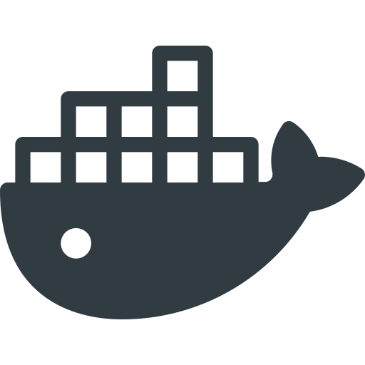
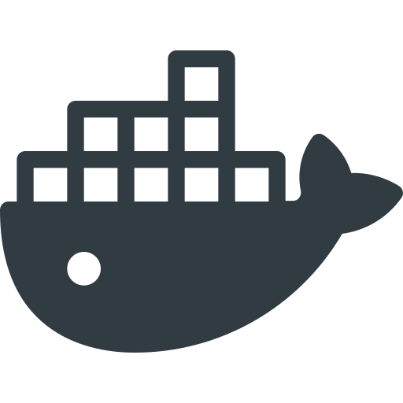

¿Qué es Quantum Microservice?
Este microservicio API RESTful permite generar números aleatorios con verdadera aleatoriedad cuántica, lo que lo hace ideal para cifrado seguro, generación de claves criptográficas, simulación de procesos estocásticos y aplicaciones en seguridad informática. Puede utilizarse en sistemas que requieran una fuente confiable de aleatoriedad para mejorar la protección de datos y la integridad de las comunicaciones.
La Revolución de la Aleatoriedad Cuántica.
En un mundo donde la seguridad digital depende de la calidad de la aleatoriedad, la computación cuántica marca un antes y un después. La capacidad de generar números realmente impredecibles, basados en los principios fundamentales de la mecánica cuántica, abre nuevas posibilidades en el cifrado de datos, la criptografía y la simulación de eventos complejos. Este microservicio aprovecha la naturaleza misma del universo para ofrecer una fuente de aleatoriedad auténtica, imposible de predecir incluso para los algoritmos más sofisticados..
Características del Microservicio.
Este microservicio, desarrollado con FastAPI y Qiskit, proporciona una API segura y modular con autenticación JWT, gestión de usuarios y generación de números aleatorios basados en mecánica cuántica. Su arquitectura está diseñada para ser eficiente y escalable, utilizando MongoDB Atlas como base de datos y la librería motor para operaciones asíncronas. La seguridad está garantizada mediante el uso de bcrypt para el hashing de contraseñas y PyJWT para la autenticación basada en tokens JWT. Entre sus principales características, el microservicio permite la gestión completa de usuarios a través de endpoints CRUD, la autenticación con OAuth2 y la generación de claves criptográficas utilizando bits obtenidos de qubits en superposición. Los módulos dedicados a la aleatoriedad cuántica implementan funciones avanzadas como la creación de qubits en superposición, la generación de bits y números aleatorios, y la producción de claves para AES, RSA, UUID y OTP, todo basado en principios de mecánica cuántica. La implementación sigue una estructura modular con rutas bien definidas para autenticación, usuarios y generación de claves, asegurando facilidad de mantenimiento y extensibilidad.


 

¿Cómo consumir esta API?
Sobre la Aleatoriedad Real y la Pseudo-Aleatoriedad.
En el ámbito de la computación cuántica, el colapso de un qubit es la muestra perfecta de aleatoriedad real. Mientras que un qubit puede existir en una superposición de estados (una especie de "estar en todas partes a la vez") el instante de la medición lo obliga a decidir, de forma completamente impredecible, entre 0 y 1. Este fenómeno, impulsado por la incertidumbre inherente a la mecánica cuántica, contrasta con la pseudo-aleatoriedad: algoritmos matemáticos que, a pesar de generar secuencias aparentemente caóticas, siguen un patrón determinista si se conoce la semilla inicial. Es como comparar un truco de magia totalmente espontáneo con una ilusión preensayada, donde la computación cuántica se luce al ofrecer un azar genuino que, literalmente, no se puede calcular.